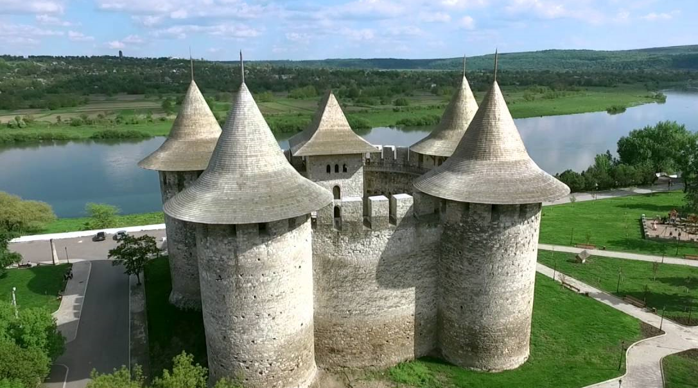
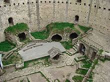

html>
Cetatea Soroca
Cetatea Soroca

Cetatea Soroca este o cetate moldovenească din secolul al XVI-lea, clădită din lemn de Ștefan cel Mare, în fața vadului peste Nistru, și reconstruită în piatră de către Petru Rareș, la mijlocul secolului al XVI-lea.
Apasa aici pentru a vedea incaperea cetatii!
Cetatea Soroca este un monument istoric unic în arhitectura construcţiilor defensive ale Moldovei medievale. Cetatea de piatră pe care o vedem azi a fost ridicată de un grup de zidari din Transilvania, conduşi de meşterul Iacob, care a şi lăsat o inscripţie în interiorul cetăţii: „a construit acest castel Iacob”. Înainte de cetatea de piatră a existat aici o cetate de lemn şi pămînt, despre care se crede că, deşi a fost menţionată abia în 1499, ar fi fost construită mai înainte. Vestigii ale acestei fortificaţii de lemn au fost găsite în decursul săpăturilor arheologice din interiorul cetăţii.
